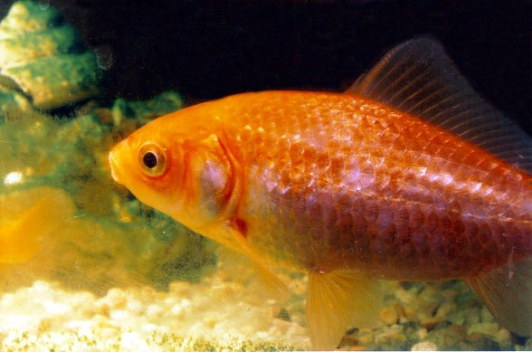

垂钓建议ANGLING
可在允许垂钓的水域尝试。建议使用中等调性手竿或前打竿，主线 2–4 号；饵料以蚯蚓、玉米、麦粒等综合饵为主，重点在湖泊与静水的水草边缘、浅滩与入湖河口下竿。繁殖期、禁渔期和幼鱼集中时段应主动放流，并遵守当地最小可捕规格。是否可钓以渔业主管部门规定为准。

鲤形目 · 鲤科
Carassius auratus
鲤科中型鱼类，分布于云南、海南，多见于近底层水层，以有机碎屑、底栖藻类与水草等为食。
体粗壮，尾柄粗而短。头部无鳞，呈宽三角形，眶间隙宽，口鼻长于眼径，上颌骨到达后鼻孔或不完全接近眼睛，上颌缺乏触须。雄鱼的婚结节细密，位于鳃盖上，有时位于背部，少数位于胸鳍上。很容易与鲤鱼杂交，杂交的大多数特性处于中间状态。尾鳍有17-19条鳍条。最后一个简单的肛门射线。
最大体长可达 48.0 cm（全长）；最大体重约 1.6 kg；计数特征为背鳍棘 3，背鳍软条 14，臀鳍棘 2，臀鳍软条 4，脊椎骨 30。
文献记录分布于云南、海南。
涉及水系包括长江、汉江、西江、北江、东江、澜沧江（湄公河）、塔里木河。
湖泊记录有博斯腾湖、乌伦古湖。
国外分布于日本。

湖泊、池塘与水库水体的交换较慢，沿岸浅水区生长挺水植物和沉水植物，浮游生物与底栖动物丰富。鲫、鲤、鲂、鳑鲏等在此类水体中最为常见。
栖息于淡水、咸淡水，近底层水层。
适宜水温 0–41℃；pH 6.0–8.0；硬度 5–19 dH；水深 0–20 m；气候带属亚热带。
洄游类型为河川洄游。
成鱼栖息于河流、湖泊、池塘、沟渠等积水或流速缓慢的地方。它们出现在富营养化水域、植被茂盛的池塘和运河中。在冷水中生活得更好。主要以浮游生物、底栖无脊椎动物、植物材料和碎屑为食。金鱼在水下植物上产卵。雌鱼在产卵期间多次产卵。卵生，有浮游仔鱼。它们在圈养中可以存活很长时间。记录的最大盐度为 17 ppt，但无法承受超过 15 ppt 的长时间暴露。
主要摄食有机碎屑、底栖藻类与水草、底栖甲壳类、昆虫、软体动物、环节动物等。营养级约 2.0。
食性类型属杂食性。
繁殖方式：雌雄异体；受精方式：体外受精；产卵频率：每年一个明显繁殖高峰；繁殖类型：非护卵型。
冬季的寒冷水温对于卵子的正常发育是必要的。产卵发生在杂草丛生的浅水中，通常是暴露在水中的柳根生长的地方，也有被春季洪水淹没的草地。产卵活动在黎明前开始，到下午三点左右。每条鱼每隔 8-10 天产卵 3-10 批。幼鱼需要高温才能生长。卵有粘性，附着在水生植物或水下物体上雌鱼在产卵期间多次产卵。
本种未列入 2021 年《国家重点保护野生动物名录》，但仍可能受省级名录、禁渔期、禁渔区、水产种质资源保护区及地方渔业法规管理。垂钓、采集或饲养前，请先确认当地规定。
可在允许垂钓的水域尝试。建议使用中等调性手竿或前打竿，主线 2–4 号；饵料以蚯蚓、玉米、麦粒等综合饵为主，重点在湖泊与静水的水草边缘、浅滩与入湖河口下竿。繁殖期、禁渔期和幼鱼集中时段应主动放流，并遵守当地最小可捕规格。是否可钓以渔业主管部门规定为准。
物种档案整理自 FishBase（物种 ID 271），分类接受名参考 GBIF Backbone Taxonomy；保护等级依据 2021 年《国家重点保护野生动物名录》。中文描述由英文原始资料机器翻译并校正术语，可能存在语义偏差。
典型生境图片为生境类型示意图，用于呈现该类水域的环境特征，并非本种在野外的实拍。垂钓、饲养与野采建议仅为科普参考，请以当地渔业与林草主管部门规定为准。